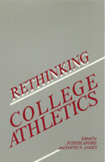

<body bgcolor="#FFFFFF" text="#000000" link="#0000FF" vlink="#CC0000" alink="#CC0000"><center><hr width="350" size="1" align="center" noshade>Why do colleges have intercollegiate athletics? Why should colleges keep them?<hr width="350" size="1" align="center" noshade><p><a href="https://cdcshoppingcart.uchicago.edu/Cart/ChicagoBook.aspx?ISBN=9780877227168&&PRESS=temple" target="_top">Buy this book!</a> | <a href="https://cdcshoppingcart.uchicago.edu/Cart/Cart.aspx?PRESS=temple" target="_top">View Cart</a> | <a href="https://cdcshoppingcart.uchicago.edu/Cart/Cart.aspx?PRESS=temple" target="_top">Check Out</a></p><p></p></center><!--none//--><h1>Rethinking College Athletics</h1>
<h3>edited by Judith Andre and David N. James</h3>
<P>cloth 0-87722-716-0 $56.50, Oct 90, <FONT COLOR=#990033>Out of Stock Unavailable</FONT>
<br>paper 1-56639-002-8 $31.95, <FONT COLOR=#990033>Out of Stock Unavailable</FONT>
<BR> 257 pp
6x9
</P><BLOCKQUOTE><I>"This timely and original collection addresses crucial issues in the areas of higher education, political culture, the sociology of leisure, and race relations."</I>
<BR>&#151<B>Andre Markovits</B>, Professor, Department of Political Science, Boston University<I></I></BLOCKQUOTE>
<P>College sport is a major part of our cultural landscape, but it is perennially troubled with rule violations, academic failure, and exploitation. As recent moral philosophy has turned to practical issues, it has somehow overlooked the problems in its own back yard. This collection of essays enables us to step back from the sports page for both a broader view and a deeper look at college athletics. The editors, who are themselves moral philosophers, have brought together many perspectives&#151phenomenology, game theory, aesthetics, cognitive science, as well as history, anthropology, economics, and sports medicine. The essays illuminate the values of sport and their corrosion within the university's commercial environment.
<P>Does sport belong in college at all? If so, how can institutions preserve the real values of athletics while honoring those of the university? The book's contributors&#151philosophers, social scientists, and physical educators&#151examine the current status of sport in Western society: the reason for its importance, the kind of pleasure derived by both participants and spectators, problems faced by athletes, and the effects on the larger society of troubles within the world of sport.
<P>Comparing university sport programs in the United States with those in other countries and examining problems that start with recruiting high school athletes, the authors ask whether present practices are justified. Determining the values that are intrinsic to sport, they explore how these values fit with the essential goals of universities. And they look at the peculiar features of revenue-producing sports and ask whether these change the nature of sport.
<BR>&nbsp;<h2>Excerpt</h2><P>Excerpt available at <a href="http://www.temple.edu/tempress">www.temple.edu/tempress</a></p>
<BR>&nbsp;<h2>Reviews</h2>
<p><I>"From the practical to the fanciful, this book offers a broad range of views about what can be done about the problems in college sports...for readers interested in a topic about which there has been precious little thoughtful analysis, </I>Rethinking College Athletics<I> is a valuable addition to the debate."</I>
<br>&#151<b><I>The Christian Science Monitor</I></b>
<p><I>"The book...offers essays on the history, philosophy, aesthetics, and economics of college athletics.... [The] authors explore the benefits that sports bring to the athletes who play them, the spectators who watch them, and the institutions that sponsor them."</I>
<br>&#151<b><I>The Chronicle of Higher Education</I></b>
<p><I>"The essays...are persuasive. The editors question if sports belong in college. They take an in-depth look at revenue-producing sports as inevitably destroying the good of the sport itself.... Through the presentation of different perspectives, </I>Rethinking College Athletics<I> will help one to imagine alternatives not yet attempted in college sport."</I>
<br>&#151<b><I>Athletics Administration</I></b>
<BR>&nbsp;<h2>Contents</h2><P>
<p>Preface
<br>Introduction
<p><b>Part I: Foundations: History and Philosophy of Sports</b>
<br>1. The Anomaly of Intercollegiate Athletics &#150 Allen Guttmann
<br>2. The Greeks and the Meaning of Athletics &#150 Lawrence J. Hatab
<br>3. Intercollegiate Athletics: Do They Belong on Campus? &#150 Robert L. Simon
<p><b>Part II: Why Play? Goods for the Player</b>
<br>4. "When Power Becomes Gracious": The Affinity of Sport and Art &#150 Drew Hyland
<br>5. Feminism and the Sport Experience: Seeking Common Ground &#150 Gail Whitaker
<br>6. Nonsense on Stilts: A Skeptical View &#150 Richard F. Galvin
<p><b>Part III: Why Watch? Goods for the Spectator</b>
<br>7. Liveliness and Personality: The Content of the Aesthetic Object in Sport &#150 Satoshi Higuchi
<br>8. Waiting for DiMaggio: Sport as Drama &#150 Joseph H. Kupfer
<br>9. Sports and Art: Beginning Questions &#150 Ted Cohen
<br>10. Cognitive Errors in Sports Analysis &#150 Richard Double
<p><b>Part IV: Reform: The Example of Drugs</b>
<br>11. Banning Drugs in Sports: A Skeptical View &#150 Norman Fost
<br>12. Drug Testing and the Nature of Athletics &#150 Roger Paden
<br>13. On Banning Performance-Enhancing Drugs &#150 Roger Paden
<br>14. Cooperation Against Doping? &#150 Gunnar Breivik
<p><b>Part V: Beyond Reform: Some Radical Suggestions</b>
<br>15. The Economics of Intercollegiate Sports &#150 Roger G. Noll
<br>16. Why Everyone Deserves a Sporting Chance &#150 Education, Justice, and College Sport &#150 Janice Moulton
<p><b>Part VI: Without Reform: A Different Hope</b>
<br>17. Memory, Attention, and the Communities of Sport &#150 John J. MacAloon
<p>Concluding Remarks: Where Do We Go from Here?
<br>Guide to Further Reading
<br>Notes on Contributors
<br>Index
</P><BR>&nbsp;<H2>About the Author(s)</H2>
<P><B>Judith Andre</B> is Associate Professor of Philosophy at Old Dominion University.</P>
<P><B>David N. James</B> is Assistant Professor of Philosophy at Old Dominion University.</P>
<P>Contributors: Gunnar Breivik, Ted Cohen, Richard Double, Norman Fost, Richard F. Galvin, Allen Guttmann, Lawrence J. Hatab, Satoshi Higuchi, Drew Hyland, Joshep H. Kupfer, John J. MacAloon, Janice Moulton, Roger G. Noll, Roger Paden, Robert L. Simon, Gail Whitaker, and the editors.</P>
<BR><H2>Subject Categories</H2>
<p><A HREF="/tempress/philosophy.html" TARGET="_top">Philosophy and Ethics</a>
<BR><A HREF="/tempress/general.html" TARGET="_top">General Interest</a>
</p>
<p align="center"><a href="https://cdcshoppingcart.uchicago.edu/Cart/ChicagoBook.aspx?ISBN=9780877227168&&PRESS=temple" target="_top">Buy this book!</a> | <a href="https://cdcshoppingcart.uchicago.edu/Cart/Cart.aspx?PRESS=temple" target="_top">View Cart</a> | <a href="https://cdcshoppingcart.uchicago.edu/Cart/Cart.aspx?PRESS=temple" target="_top">Check Out</a></p><p><font face="Arial" size="1"><a href="copyright.html" onMouseOver="window.status='Web Copyright Policy';return true;" onMouseOut="window.status=''" title="Web Copyright Policy">&copy;</a> 2015 <a href="http://www.temple.edu" target="new" onMouseOver="window.status='Link to Temple University home page';return true;" onMouseOut="window.status=''" title="Link to Temple University home page">Temple University</a>. All Rights Reserved. http://www.temple.edu/tempress/titles/707_reg.html</font></p>